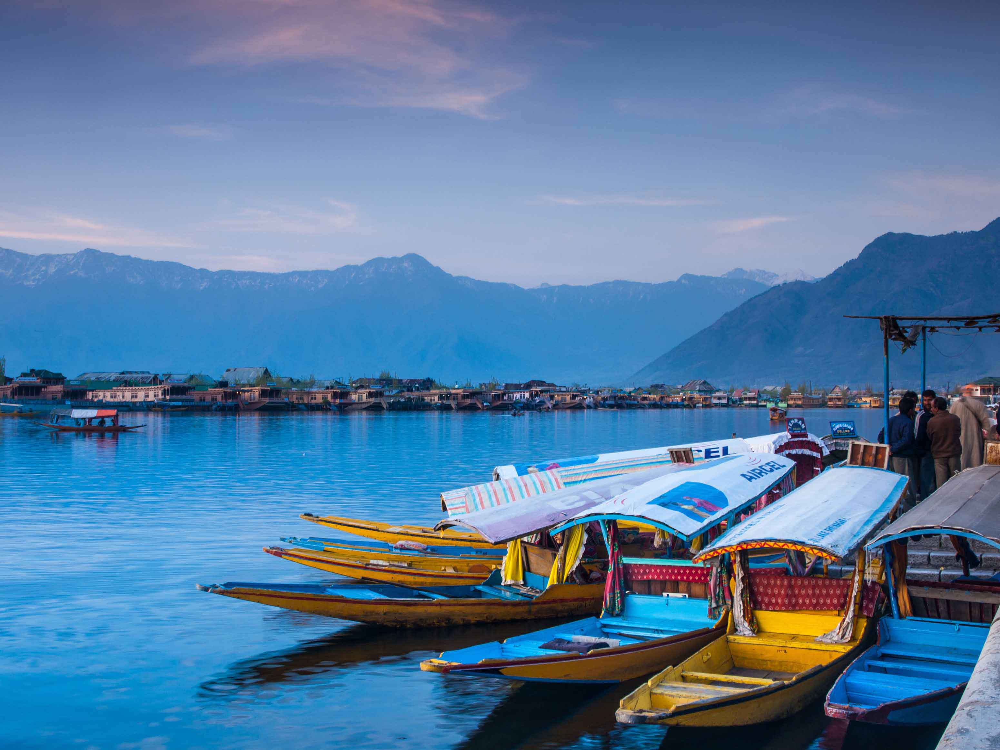
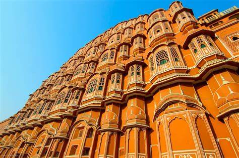
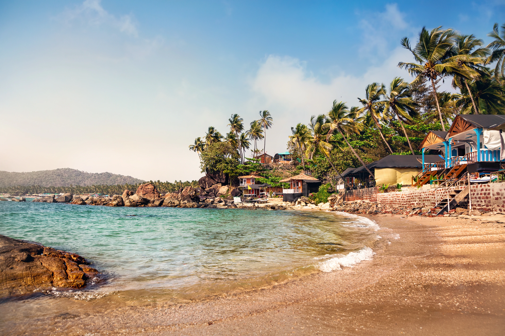
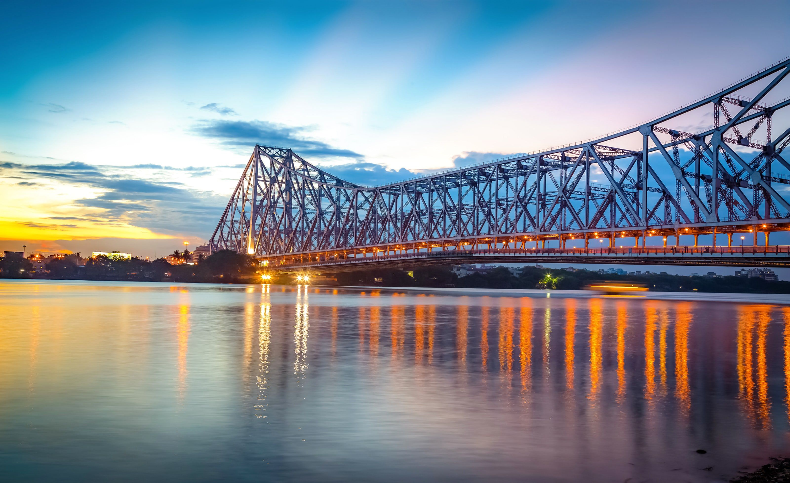
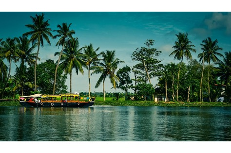
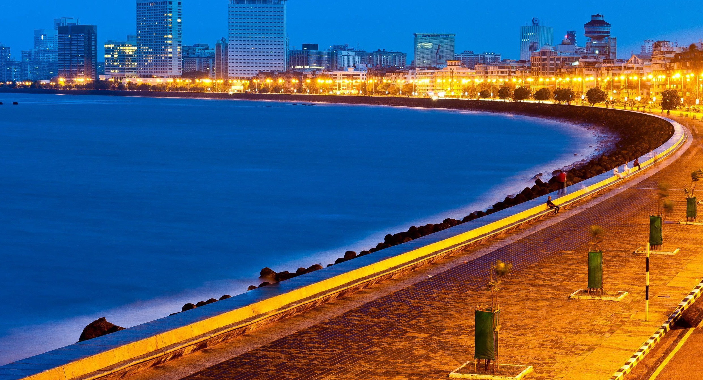

Enjoy the best tour experiences
travelling paradise has to offer
|  |  |  |
| Kashmir | Rajshthan | Goa |
|---|---|---|
| Kashmir is the very beautiful place in India which is located in the northern India between the valley of Great Himalaya and Pir Panjal Mountain. This is the place which is known as ‘Paradise on Earth’, due to its magnificent beauty. It always offers you panoramic views of the beautiful nature. | The core beauty of Rajasthan lies in its culture that is inherited in the state since time immemorial and is quite alluring. The folk music and dances of the state have earned international recognition due to their ability of binding the onlookers with their soulful touch. | Goa has number of other scenic options. One such attraction is Waterfall. Goa lies between Sahyadri hills and Arabian Sea. Goa is full of beautiful springs, lakes, and waterfalls. While traveling to these places one gets to see the natural beauty of Goa. Dudhsagar Water Falls, Kesarval Springs, Mayem Lake, Arvalem Waterfall, Kuskem Waterfall are some of the famous water falls in Goa. |
|
 |  |
| Delhi | Kolkata | Kerala |
| Delhi is the capital of India. It is a beautiful city. It stands on the bank of river Yamuna. The old Delhi was constructed during the Mughal period. Old Delhi is very crowded. In New Delhi, there are beautiful parks and gardens. Nehru Park, Talkatora Garden, Lodhi Garden and Buddha Park are worth seeing gardens. Old Delhi has very majestic buildings of great historical importance too. | The Boisterous Beauty Of Kolkata. One word about Kolkata, it’s busy! And you’d never expect which sudden turn would reveal a stunning Victorian structure with incredible historic importance. The streets here tell gripping tales of the colonial era when this city set on Hooghly river was the capital of India during the British Raj. | KERALA: The god’s own country is one of the major tourist attraction as well as the best honeymoon destination in India. The land of God, Kerala is believed to be a gift of the Arabian Sea. The pride of Kerala are Gorgeous and Exotic Beaches, Breathtaking hill Stations, Enchanting waterfalls, Beautiful lagoons, Meandering rivers and Amazing natural scenarios. |
|  | |
|
| Mumbai | Punjab | Madhya Pradesh |
| Mumbai is a beautiful city, but a terrible place” ~ Architect Charles Correa After having lived in Mumbai for almost 8 years, I completely agree with the above statement. How much ever ironic it sounds, the city of Mumbai is extremely beautiful in its own essence, yet it is a terrible place to live. It is a city of extremes | The state of Punjab is renowned for its cuisine, culture and history. Punjab has a vast public transportation and communication network. Punjab receives many religious tourists, as the state is home to some of the holiest places in Sikhism, including the Harmandir Sahib and three of the five Panj Takht | Madhya Pradesh, as its name implies, lies in the heart of India, whose topography ranges from plateau with the Vindhya & the Satpura mountain ranges, the plains in the east, meandering rivers, rocky hills & ravines to lush green forests. State offers all important pillars of Indian tourism like pilgrim tourism, wildlife tourism, heritage tourism, buddhism, adventure sports etc. |